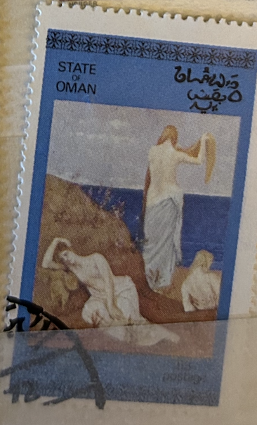
| SOURCE | TITLE| IMAGE MATCH | click to source page |
| Quizlet | The Era of Norman Conquest Diagram | Quizlet | 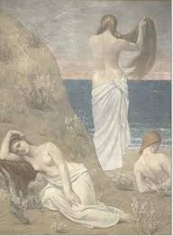 |
| Fine Art America | PIERRE PUVIS DE CHAVANNES Jeunes filles au bord de la mer Young Girls by the Seaside, 1879. Poster by Pierre Puvis De Chavannes - Fine Art America | 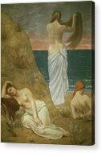 |
| PX Puzzles | Young Girls by the Sea, 1879 Jigsaw Puzzle by Pierre Puvis de Chavannes - PX Puzzles | 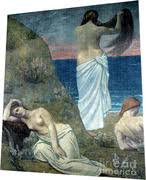 |
| McGaw Graphics | Young Women at the Sea Shore (petite version) (Framed) | McGaw Graphics | 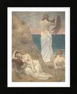 |
| Fine Art America | Young Girls At The Seaside, 1879 By Pierre Puvis De Chavannes Painting by Pierre Puvis De Chavannes - Fine Art America | 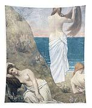 |
| pixels.com | Young Girls by the Seaside Jigsaw Puzzle by Pierre Puvis de Chavannes - Pixels | 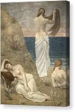 |
| HipStamp | Oman Stamp- 1972-World Famous Nude ART Paintings CTO Full Sheet Very Fine | Middle East - Oman, Stamp / HipStamp | 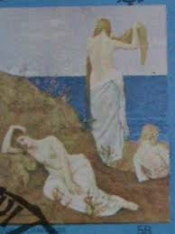 |
| The Wall Street Journal | Venice Show Offers New Take On Impressionist de Chavannes - WSJ | 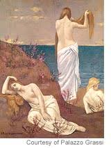 |
| MeisterDrucke - Art Prints, Paintings & Reproductions | Study of a Woman (Abundance) by Pierre Puvis de Chavannes | 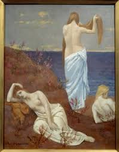 |
| Fine Art America | Young Girls by the Seaside Wood Print by Pierre Puvis de Chavannes - Fine Art America | 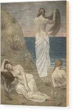 |
| Album Online | Young Girl Tapestries for Sale by Album | 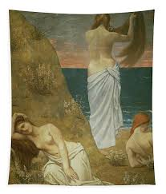 |
| Boutiques de musées | Jeunes filles au bord de la mer (toiles sur châssis) · Boutiques de musées | 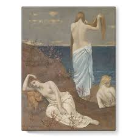 |
| Wikipedia | The Sweet Landscape - Wikipedia | 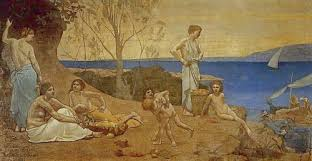 |
| AbeBooks | Alphonse Osbert - AbeBooks | 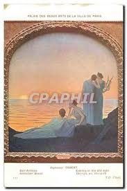 |
| Fine Art America | Young Girls by the Seaside Painting by Pierre Puvis de Chavannes - Fine Art America | 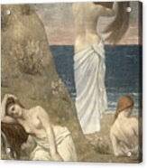 |
| Web Gallery of Impressionism | Pierre Puvis de Chavannes | 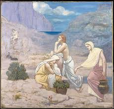 |
| Fine Art America | Young Girls by the Seaside - Digital Remastered Edition Painting by Pierre Puvis de Chavannes - Fine Art America | 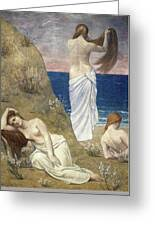 |
| pixels.com | PIERRE PUVIS DE CHAVANNES Jeunes filles au bord de la mer Young Girls by the Seaside, 1879. Metal Print by Pierre Puvis De Chavannes - Pixels | 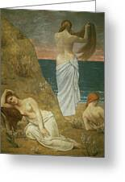 |
| PICRYL | Puvis de Chavannes - Doux Pays, 1882, Inv.-1087-01 - PICRYL - Public Domain Media Search Engine Public Domain Search | 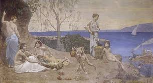 |
| sastacharge.in | Young Girls Seaside Tableau : Young Girls By The Seaside (1879) Par Pierre Puvis De Chavannes - Reproduction œuvre D'art Vintage | 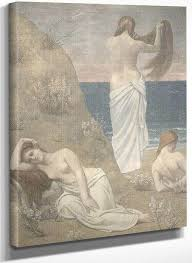 |
| Museoteca | Museoteca - Jeunes filles au bord de la mer, Puvis de Chavannes, Pierre | 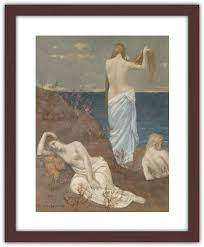 |
| Walmart | Pierre Puvis de Chavannes 14x18 Black Ornate Wood Framed Double Matted Museum Art Print Titled - Young Girls by the Seaside - Walmart Business Supplies | 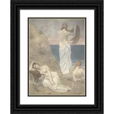 |
| eBay | vtg postcard PUVIS DE CHAVANNES Dramatic Poetry Boston Library unposted art | eBay | 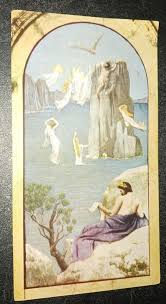 |
| If Only He Would Go : r/JewsOfConscience | 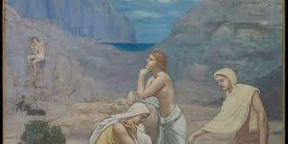 | |
| Arthive | The beheading of St. John the Baptist by Pierre Cecil Puvi de Chavannes: History, Analysis & Facts | Arthive | 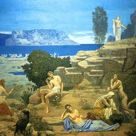 |
| Amazon.com | Amazon.com: Young Girls by The Seaside by Pierre Puvis De Chavannes Canvas Poster Wall Art Picture Prints Hanging Photo Gift Idea Decor Home Posters Artworks 24x36inch(60x90cm): Posters & Prints | 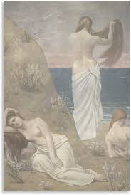 |
| Art Prints On Demand | Sweet Country - Pierre-Cécile Puvis de Chavann as art print or hand painted oil. | 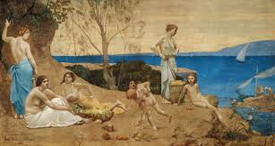 |
| PICRYL | 23 Stamps of ajman Images: PICRYL - Public Domain Media Search Engine Public Domain Search | |
| Alamy | Pierre Puvis de Chavannes - Young Girls by the Seaside - Musée d'Orsay, Paris Stock Photo - Alamy | 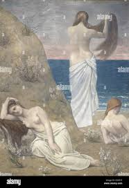 |
| Fine Art America | The Prodigal Son Beach Towel by Pierre Puvis de Chavannes - Fine Art America | 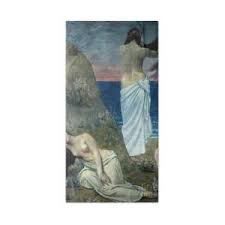 |
| Fine Art America | Young Girls by the Sea, 1879 Fleece Blanket by Pierre Puvis de Chavannes - Fine Art America | 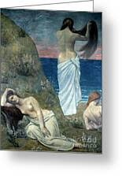 |
| qcleane.com | Casque Bébé 2 En 1 Casqie Anti Bruit Bebe Casque Anti-Bruit Bébé Lilian&Gema 2-en-1 - Réglable, Réduction 25dB - Pour 3-48 Mois Casque Anti Bruit Bebe 1 Mois Casque Anti Bruit Bébé | 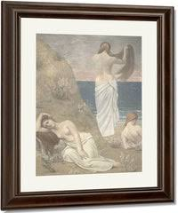 |
| Truly Art | All – Truly Art | 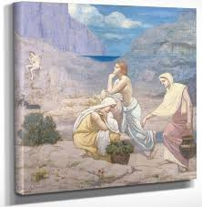 |
| eBay | Used Miniature Sheet Art Postal Stamps for sale | eBay | |
| Georgia College & State University | The Wounds of War: Puvis de Chavannes' The Dream | 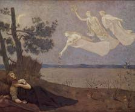 |
| AbeBooks | Dream States by Shaw, Jennifer L.: Fine Hardcover/Hardback (2002) First Edition. | Badger Books | 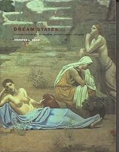 |
| Etsy | Pierre Puvis De Chavannes Giclee Prints - Etsy Israel | 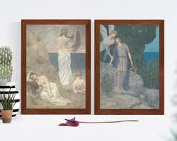 |
| Fine Art America | Tamaris Painting by Pierre Puvis de Chavannes - Fine Art America | 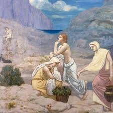 |
| 1st Art Gallery | Homer Epic Poetry by Pierre-Cecile Puvis de Chavannes Reproduction For Sale | 1st Art Gallery | 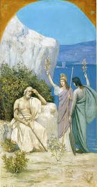 |
| Wikimedia.org | File:The return of Ulysses.gif - Wikimedia Commons | |
| Pixels Merch | Sybilla Delphica Fleece Blanket by Edward Burne-Jones - Pixels Merch | 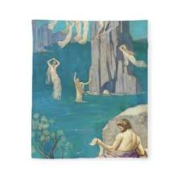 |
| Fine Art America | Athens Theatre Paintings for Sale - Fine Art America | 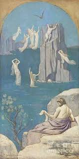 |
| Alamy | Puvis De Chavannes Pierre - Aeschylus Dramatic Poetry - French School - 19th and Early 20th Century Stock Photo - Alamy | 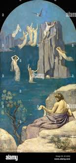 |
| Artsy | Armand Point - Art & Prints for Sale | Artsy | 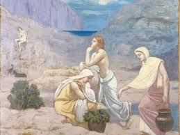 |
| Fine Art America | The Shepherd's Song, from 1891 Poster by Pierre Puvis de Chavannes - Fine Art America | 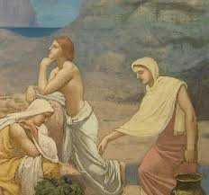 |
| Kuader | Poesía Dramática Esquilo Pierre-Auguste Renoir cuadro en lienzo | 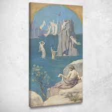 |
| Alamy | Puvis de Chavannes Jeunes Filles au bord de la mer 1879 Stock Photo - Alamy | 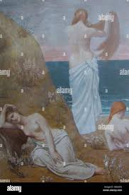 |
| Fine Art America | Water Torture Paintings for Sale - Fine Art America | 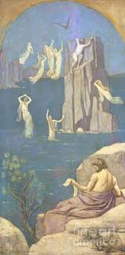 |
| Fine Art America | Young Girls by the Seaside Framed Print by Pierre Puvis de Chavannes - Fine Art America | 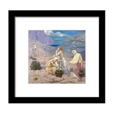 |
| Fine Art America | Dramatic Poetry, Aeschylus - Digital Remastered Edition Painting by Pierre Puvis de Chavannes - Fine Art America | |
| Carnegie Museum of Art | Collection | Carnegie Museum of Art | 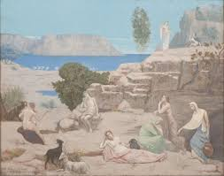 |
| Fine Art America | The Dream: 'in His Sleep He Saw Love, Glory And Wealth Appear To Him', 1883 Oil On Canvas) Painting by Pierre Puvis De Chavannes - Fine Art America | 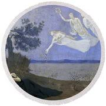 |
| Arthive | Buy digital version: Carrier pigeon by Pierre Cecil Puvi de Chavannes | Arthive | 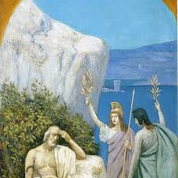 |
| AbeBooks | Dream States: Puvis de Chavannes, Modernism, and the Fantasy of France by Shaw, Jennifer Laurie: Fine Hardcover (2002) 1st. | LEFT COAST BOOKS | |
| Fine Art America | Dramatic Poetry Aeschylus 1896 Painting by Pierre-Auguste Renoir - Fine Art America | |
| Alamy | The Shepherd's Song, Pierre Puvis de Chavannes, 1891 Stock Photo - Alamy | |
| Amazon.com.au | Art Remedy Puvis de Chavannes - Young Girls by the Seaside Canvas Nude Portrait Wall Art, Gallery Wrapped, 10" x 15" : Amazon.com.au: Home | |
| Fine Art America | Mystic Nude Shower Curtains for Sale - Fine Art America | |
| Amazon.com | Amazon.com: Trademark Fine Art Young Girls By The Seaside by Pierre Puvis, 30x47-Inch : 居家與廚房 |
{kind=link}